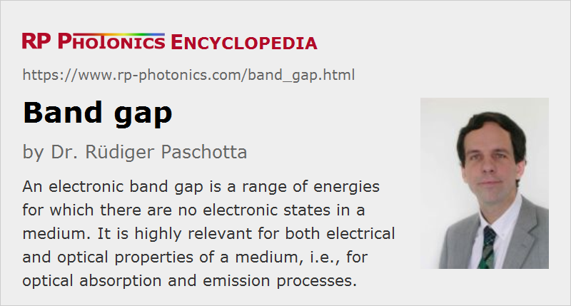

Band Gap
Definition: a range of energies for which there are no states of carriers in a medium
German: Bandlücke
Category: physical foundations
How to cite the article; suggest additional literature
Author: Dr. Rüdiger Paschotta
This article mainly deals with electronic band gaps (bandgaps), including their importance for the optical absorption and emission properties of materials. There are also so-called photonic band gaps, which are briefly discussed in the last section of this article.
The application of quantum mechanics in solid-state physics has led to physical models which involve a continuum of states which can be occupied by electrons. Each state has a certain energy and k vector (crystal momentum). As electrons are fermions, each of those states can be occupied by one electron only. At very low temperatures, the electrons will occupy the levels with the lowest possible energies. (If one imagines to fill more and more electron into such a system, the electrons will first occupy the very lowest energy levels and then levels with increasingly higher energies, as the lower ones are already occupied.) At a finite temperature (room temperature, for example), the distribution of electrons over the electronic states is described with a Fermi function, which drops with increasing energy.
It turns out that there are energy regions for which no electronic states exist. These are called band gaps. A medium can have many of those, but the band gap of central importance is that near the Fermi energy, where the level occupation according to the Fermi function drops substantially. That is the band gap which is usually meant when the text mentions the band gap of a material.
Materials with Different Electronic Structures
The electrical and optical properties of a material strongly depend on their electronic structure:
Dielectrics
In some cases, the Fermi energy lies somewhere in a large band gap (with a width of e.g. above 4 eV), so that all bands below that energy are completely filled, while all higher-lying bands are completely empty, except for some thermal excitation which is negligibly unless at high temperatures. Such materials are called dielectrics or insulators. They are electrically insulating, essentially because the combined contribution of each band to the current density is zero, and any rearrangement of occupation within the completely filled bands is not possible.
Further, dielectrics generally cannot absorb visible or near-infrared light, because the photon energy is not sufficient for transitions from the valence band (the highest filled band) to the conduction band (the lowest empty band), or in fact for any kinds of transitions of carriers. Only in the ultraviolet region, photon energies become sufficient for interband transitions, causing strong absorption. Furthermore, there is strong infrared absorption at longer wavelengths, which is associated with the generation of phonons, and weaker absorption caused by multi-phonon absorption processes.
At very high optical intensities, it is possible to have multiphoton absorption (e.g. two-photon absorption), where two or more photons are absorbed at the same time, and the combined photon energy is available for the transition of a single carrier. Such processes often play a role in laser-induced damage, for example. However, they are generally negligible at moderate intensities, e.g. even in bright sun light.
Semiconductors
In semiconductors, the Fermi energy also lies in a band gap, but the band gap has a smaller width of only a few electron volts or even less than 1 eV.
A first consequence of the narrow band gap is some electrical conductivity, since thermal excitation e.g. at room temperature creates some small population of the conduction band and a corresponding population of holes in the valence band. An applied electric field leads to a slight rearrangement of population within the production and balance brand, which results in an electrical current. Note, however, that the conductivity varies a lot between different semiconductors, mainly due to the strong dependence on the band gap energy.
Another consequence is that photons with moderate energy (e.g. in the visible spectral region) can cause interband transitions, i.e., from the valence band to the conduction band. Therefore, semiconductors (at least those with a narrow band gap) appear opaque and can transmit only infrared light – and that with a rather high refractive index. The details, however, substantially depend on whether we have a direct or indirect band gap – see below.
The table below lists the band gap type and energy of various semiconductors at room temperature. It does not include ternary and quaternary compounds where those properties depend on a composition parameter.
| Material | band gap type | band gap energy | bandgap wavelength |
|---|---|---|---|
| lead selenide (PbSe) | direct | 0.27 eV | 4.57 μm |
| lead telluride (PbTe) | direct | 0.32 eV | 3.86 μm |
| indium arsenide (InAs) | direct | 0.36 eV | 3.43 μm |
| lead sulfide (PbS) | direct | 0.37 eV | 3.34 μm |
| germanium (Ge) | indirect | 0.67 eV | 1.84 μm |
| gallium antimonide (GaSb) | direct | 0.726 eV | 1.70 μm |
| silicon (Si) | indirect | 1.12 eV | 1.1 μm |
| indium phosphide | direct | 1.35 eV | 915 nm |
| gallium arsenide (GaAs) | direct | 1.441 eV | 857 nm |
| cadmium tellurite (CdTe) | direct | 1.5 eV | 823 nm |
| cadmium selenide (CdSe) | direct | 1.74 eV | 710 nm |
| aluminum arsenide (AlAs) | indirect | 2.12 eV | 583 nm |
| gallium phosphide (GaP) | indirect | 2.24 eV | 551 nm |
| cadmium sulfide (CdS) | direct | 2.42 eV | 510 nm |
| gallium nitride (GaN) | direct | 3.4 eV | 363 nm |
| cubic zinc sulfide (ZnS) | direct | 3.54 eV | 349 nm |
| hexagonal zinc sulfide (ZnS) | direct | 3.91 eV | 316 nm |
| aluminum nitride (AlN) | direct | 6.015 eV | 205 nm |
Figure 1: Type and energy for some common semiconductor materials.
Metals and Semimetals
In metals, the Fermi energy lies within a band, which is thus only partially occupied. In that situation, it is possible to induce a rearrangement of population within that partially filled band, which turns out to enable a substantial electrical conductivity.
Concerning optical properties of metals, there is strong reflection and absorption of light. Only for optical frequencies above the plasma frequency (of the order of a couple of petahertz), a metal becomes transparent. One exploits that for metal-coated mirrors, for example.
Semimetals have similar electronic properties, only that the density of states near the Fermi energy is relatively small.
The Band Gap Energy
In case of dielectrics (insulators) and semiconductors, the band gap energy is understood to be the width of the energy gap between conduction and valence band. For metals, one would have to ask which band gap is meant.
For single-photon processes, the optical wavelength corresponding to a given band gap energy Eg can be calculated as
or numerically as 1.235 divided by the band gap energy in electron volts, obtaining the band gap wavelength in units of micrometers.
For multiphoton processes, the optical wavelengths can be correspondingly longer.
Semiconductors with Direct or Indirect band gap
Direct Band Gap
A direct band gap is defined as one where the k vector (not only its magnitude, but also its direction) is about the same for the highest states in the valence band as for the lowest states in the conduction band. (The k vector is associated with the position within the Brillouin zone.) This is relevant for optical transitions. These involve only a minor change of the magnitude of the k vector, because the optical wavelength is much longer than the interatomic distances or the lattice period. In case of a direct band gap, optical transitions are possible as soon as the photon energy exceeds the band gap energy (see Figure 1). Such a process excites one carrier from the valence band to the conduction band while leaving a hole (i.e., an unoccupied state) in the valence band. It is only that the density of initial and final states is typically quite small just at the band gap energy, but the absorption coefficient then rises steeply for increasing photon energies – in proportion to the square root of the difference of photon energy and band gap energy. Somewhat above the band gap energy, the absorption length can drop to the order of a micrometer. It also implies that the refractive index has a large imaginary component.
Similarly, emission processes corresponding to transitions from the conduction band to the valence band are easily possible, since every electron in the conduction band (typically occupying one of the lowest levels there) can find a hole in the valence band which has a very similar k vector, since the holes naturally occur in states with the highest possible energies. Therefore, the carrier lifetime is usually relatively low, for example a few nanoseconds, even if the crystal structure is of high quality (with a low defect density).
Examples for direct band gap semiconductor materials are gallium arsenide (GaAs), indium gallium arsenide (InGaAs), gallium nitride (GaN), aluminum nitride (AlN), cadmium sulfide (CdS), cadmium selenide (CdSe), cadmium tellurite (CdTe), zinc sulfide (ZnS), lead sulfide (PbS) and lead selenide (PbSe).
Indirect Band Gap
In case of an indirect band gap, the k vector of the lowest states in the conduction band substantially differs from that for the highest states in the valence band. As a consequence, absorption processes with photon energies only slightly above the band gap energy are hindered by the fact that there are no target states in the conduction band which have a suitable energy in addition to a suitable k vector. In other words, one cannot simultaneously fulfill energy conservation and momentum conservation – except if the additional emission of a phonon is involved, which can provide the required change of electron momentum while having little impact on the energy balance (see Figure 2). Such processes are possible, but occur at much lower rates; therefore, the absorption coefficient is much reduced. Also, the wavelength dependence of the absorption coefficient near the band gap is weaker. The absorption coefficient is also substantially temperature-dependent, since the temperature affects the phonon populations. For substantially higher photon energies, however, it becomes possible to directly excite carriers into the conduction band, not requiring phonons. In that regime, the absorption coefficient becomes quite high – several orders of magnitude higher than close to the band gap.
Similarly, emission processes related to recombination are hindered by the fact that a carrier in the conduction band can hardly find a hole with suitable k vector; any target states with that k vector are occupied. Therefore, emission processes are only possible by also involving the emission of a phonon. Again, this requirement substantially reduces the recombination rate and emission rate. That can also easily reduce the quantum efficiency of fluorescence, since other (non-radiative) recombination processes, provided e.g. by crystal defects (see below), can become dominant without having particularly high rates.
Examples for indirect band gap semiconductor materials are silicon (Si), germanium (Ge), aluminum arsenide (AlAs) and gallium phosphide (GaP).
Because of the reduced absorption coefficients, silicon layers in photodiodes and solar cells, for example, need to be substantially thicker – often hundreds of micrometers instead of only a couple of micrometers. For thin-film solar cells, one needs to use direct band gap materials (e.g. cadmium tellurite). Also, silicon is essentially unsuitable for light emitting diodes. Generally, the indirect band gap is often a challenge for silicon photonics.
Importance of the Band Gap Energy for Photonic Devices
The band gap energy is important for various kinds of photonic devices. Some examples:
- The emission wavelengths of light emitting diodes and laser diodes are largely determined by the band gap energy. The higher that energy, the shorter the wavelengths. Note that the strongest emission occurs at photon energy is slightly above the band gap energy, particularly in situations with high carrier densities. This is because the density of states steeply arises with increasing frequency.
- Photodiodes and other semiconductor photodetectors can have a substantial responsivity only for photon energies above the band gap energy, because that is the precondition for effective absorption which leads to the required photocurrent. Close to the band gap energy, the responsivity normally falls off substantially due to the reduced density of states.
- Solar cells can also only utilize light with photon energies above the band gap. Therefore, sun light with to long wavelength cannot be utilized. While that problem could in principle be solved by using a material was pretty small band gap energy, the result would be a low operation voltage, i.e., a low energy output per delivered carrier. The shorter-wavelength photons would then be poorly utilized, even if each of them could contribute an electron to the generated current. Therefore, the band gap needs to be chosen based on a compromise between efficient absorption of broadband sun light and a high voltage output.
Band Gap Engineering
Ternary and quaternary semiconductor compounds usually have a composition parameter, which influences the band gap properties, in particular the band gap energy. For example, one often uses indium gallium arsenide = InGaAs, more precisely InxGa1−xAs. The composition parameter x indicates the fraction of indium which is added to replace gallium. The larger that parameter, the smaller is the band gap energy. The adjustment of such parameters for obtaining the desired band gap energy – for example, in order to obtain a specific emission wavelength of a laser diode or the desired absorption edge of a semiconductor saturable absorber mirror (SESAM), is called band gap engineering.
Quantum Wells and Quantum Dots
So far, we have considered only homogeneous materials. If a material is inhomogeneous, for example containing quantum well or quantum dot structures, the electronic properties around those structures are modified. Frequently, one has a locally reduced band gap energy, so that quantum wells or dots in a medium can be absorbing even if the surrounding medium is not absorbing due to a too high band gap energy. (That often occurs in semiconductor saturable absorber mirrors.) Similarly, quantum wells e.g. in laser diodes can emit light which will not be absorbed by the surrounding semiconductor medium.
Effect of Impurities and Crystal Defects
The above considerations all applied to intrinsic materials. Additional electronic states can be provided by impurities (often intentionally introduced as dopants) and crystal defects (which may also be intentionally increased, e.g. with low-temperature growth). Grain boundaries in polycrystalline materials can also be considered as crystal defects.
Frequently, there are additional electronic levels created within a band gap, and those can play important roles. For example, they can facilitate light absorption, and they can lead to the quenching of fluorescence. Case of extrinsic photoconductive detectors, such defect states are even vital for the performance.
Photonic Band Gaps
In certain situations, so-called photonic band gaps arise; here, one considers states of the light field rather than states of electrons. Just as an electron cannot be described with a plane de Broglie wave in a medium with a periodically varying electric potential, optical plane waves are no solutions of the wave equation in a medium with a periodically varying refractive index. The analysis of those situations, occurring in certain photonic metamaterials, one also finds that there are certain regions of the photon energy for which there are no states. That implies that light with such photon energies cannot propagate over substantial distances in the medium – they may penetrate into such a structure, but with an exponentially decaying optical amplitude. That effect can be utilized for confining light, for example in a region around the core of a photonic bandgap fiber.
Questions and Comments from Users
Here you can submit questions and comments. As far as they get accepted by the author, they will appear above this paragraph together with the author’s answer. The author will decide on acceptance based on certain criteria. Essentially, the issue must be of sufficiently broad interest.
Please do not enter personal data here; we would otherwise delete it soon. (See also our privacy declaration.) If you wish to receive personal feedback or consultancy from the author, please contact him e.g. via e-mail.
By submitting the information, you give your consent to the potential publication of your inputs on our website according to our rules. (If you later retract your consent, we will delete those inputs.) As your inputs are first reviewed by the author, they may be published with some delay.
See also: absorption, fluorescence, laser diodes, photodiodes
and other articles in the category physical foundations
|  |
If you like this page, please share the link with your friends and colleagues, e.g. via social media:
These sharing buttons are implemented in a privacy-friendly way!